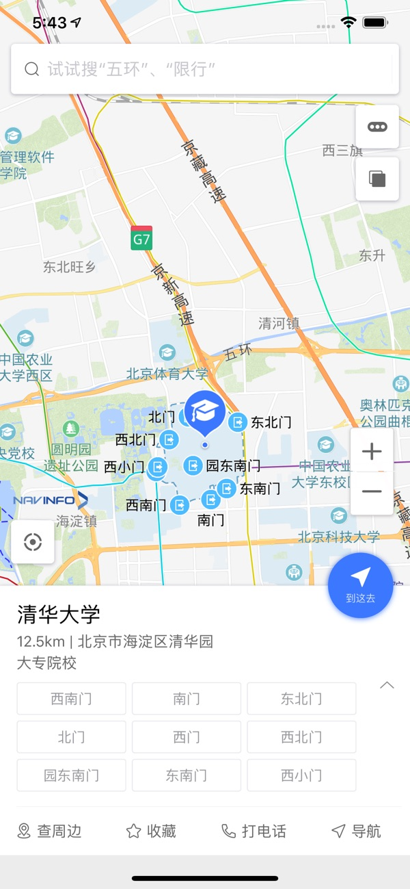
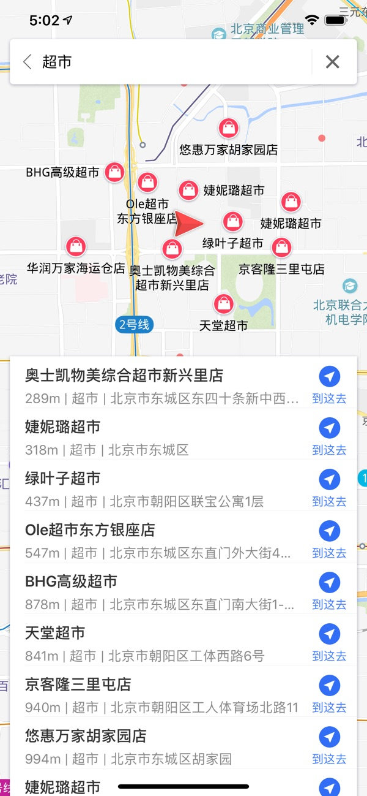
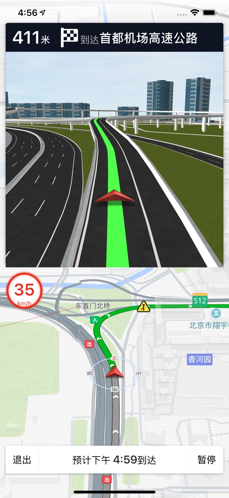
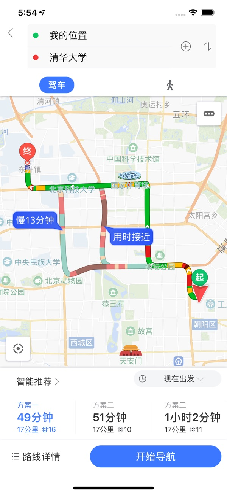

GIS引擎研发部 四维图新 今天
情如风兮轻若絮，生如梦兮淡如云。人生一场虚空大梦，韶华白首，亦不过转瞬。在茫茫的人海中，无数人擦肩而过，随着自己在人生的道路上越走越远，渐渐远去的，除了曾经的那份纯真，还有你的悸动，还有你的眼泪。
还记得你的目的地在哪吗？还能准确地找到你的定位吗？还记得你来时的方向，归去之时依然还是少年吗？为什么你需要一路行走永不停歇？为什么你需要不断定位找准方向？那是因为你还没有向生活妥协，是因为你还在远眺，是因为你还在憧憬着另一种生活。
我从哪里来？我在哪？我要到哪里去？这是困扰着每一个现代青年人的问题。而如今，横空出世了一款APP，完美解决了这个问题。这个APP就是，导航零号。

虽然导航零号长得很像一个地图软件，但是他，却是你人生的导师。正如我们口号中说的那样，我们不规划路线，我们规划你前进的方向。
无数人每天都要三省吾身，每天都要对自己有三次灵魂拷问。早饭吃什么？午饭吃什么？晚饭吃什么？你可能因为这三个问题踌躇不前举足无措，你可能因为这三个问题仰天长啸抱头痛哭。但是，打开导航零号，你就会惊喜的发现，使用周边搜索饭馆，人生的这三大难题竟然全都势如破竹地迎刃而解，使人不禁怀疑，是否有神灵活在这APP朴素的界面下。

你，是否有着一份牵挂，虽然思念了，可以给TA发你新收藏的表情，虽然思念了，可以给TA发你刚泡好的咖啡，虽然思念了，可以给TA发你准备了好久的段子。但是，纵使思念成疾，相思侵骨，你却从不愿跟TA说一句，你很想TA。回想往昔，你不禁莞尔，马上取而代之的，是一泓压制不住的泪水，抬头四顾，却不知道TA在哪个方向。不如打开导航零号吧，把终点设在TA所在的地址，将手机平放，让三角箭头与终点图标遥遥相望，而此时你目光的正前方，就是那个让你魂牵梦萦的方向。

你似乎从来没有停止过前进的步伐，一路跌打滚爬，只想着能走到更远的地方。直到后来，你才发现，人生从来都是一场接力赛，而你却天真地当成了百米赛跑。埋头前行，你真的知道自己走到哪里了吗？不如打开导航零号吧，屏幕上闪烁的光标，就是你所处的地方。你知道加速度和角速度怎样积分才能得到你的位置和朝向吗？你知道月球引力以及时刻变化的风速怎样影响你前进的速度吗？你知道道路的拥堵和天气的变化需要通过怎样的方程才能计算出你还要走多久？不知道这些没有关系，因为导航零号也不知道！但是，导航零号却依然能正确的告诉你，你，距离前方，还有很长的路要走。

十字路口，前途弥漫，你还在左顾右盼，不敢选择吗？不如打开导航零号吧，看着规划出来的路线，冥冥中指引你前进的方向。漫漫长夜，形影相吊，你还在默默祈祷着时光倒流，命运更换吗？不如打开导航零号吧，看着自己的足迹连成一条线，那是你舍不得抛弃的过往。夕阳残铺，大江东去，你还在死死扼腕，空叹逝者如斯微带着后悔吗？不如打开导航零号吧，看看阡陌交通纵横捭阖，雾生白露缘生网。三生石上，苦情树下，你还在长跪不起，虔诚地祈求着今世情缘吗？对不起，这个问题打开导航零号也没有用，开发这个APP的程序员都还没有女朋友呢！
心动不如行动，走过路过不要错过，赶紧下载一个导航零号试试看吧！